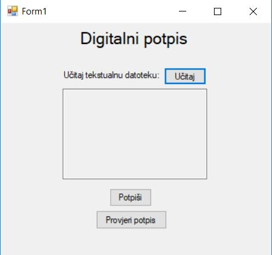
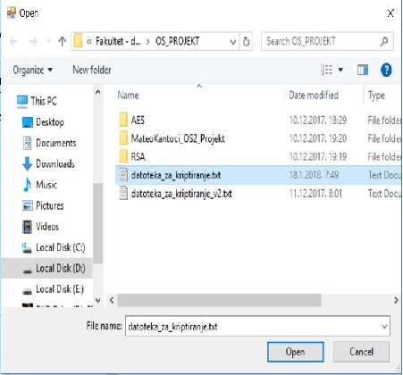
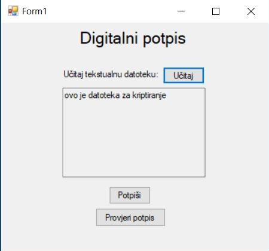
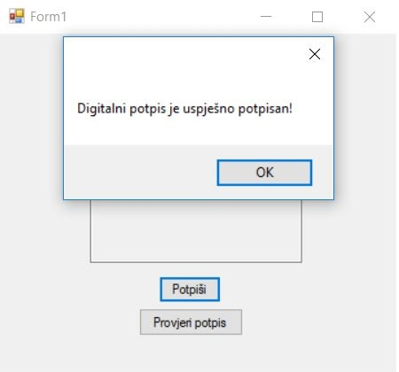
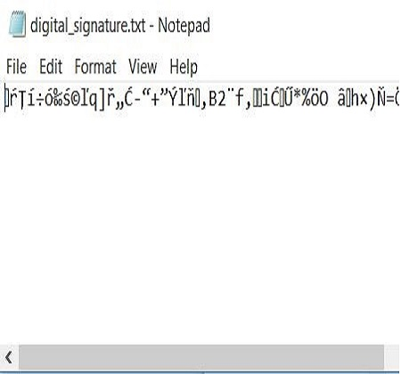
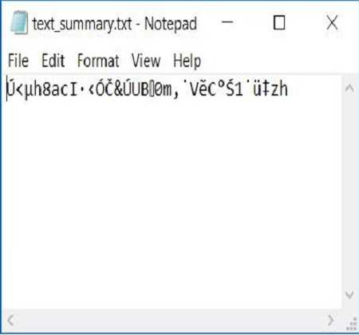
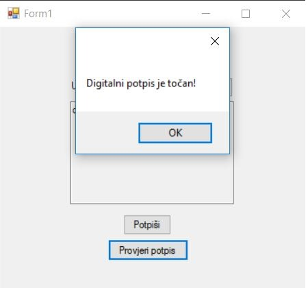
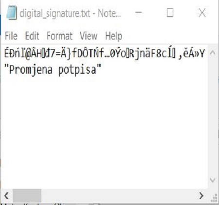
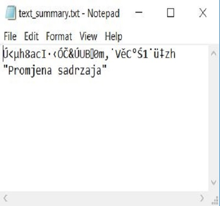

Hash Functions and Data Integrity
Sadržaj |
Uvod
Ova tema je fokusirana na kriptografske hash-funkcije (u daljnjem tekstu hash-funkcije), a naročito na njihovu upotrebu za integritet podataka i autentifikaciju poruka. Hash-funkcije imaju temeljnu ulogu u modernoj kriptografiji te ukratko hash-funkcije za ulaz uzimaju poruku koja je uglavnom fiksne duljine i kao izlaz vraćaju šifriranu poruku koja se naziva hash-code, hash-result, hash-value ili ukratko hash. Preciznije, hash-funkcija mapira niz znakova proizvoljne veličine u niz znakova fiksne duljine (n-bita). Matematički gledano uvodimo posebnu funkciju h: D -> R, gdje vrijedi |D| > |R|. Funkciju h nazivamo hash-funkcija, skup D je domena, a skup R je kodomena. Kako domena mora biti veća od kodomene, zaključujemo da će se ovim postupkom gubiti informacije, a taj problem se naziva kolizija. Osnovna ideja hash-funkcija je da hash služi kao reprezentativna slika nizova znakova (digitalni potpis) i da se ne može dobiti pomoću nekih drugih nizova znakova.
Hash-funkcije
Kao što je navedeno u uvodu, kriptografske hash-funkcije su hash-funkcije s dodatnim sigurnosnim svojstvima kako bi ih se moglo koristiti za autentifikaciju i očuvanje integriteta podataka. Izlazni nizovi najčešće se prikazuju u heksadecimalnom obliku. Idealne hash funkcije zadovoljavaju nekoliko uvjeta:
- Generiranje hash-a za svaku poruku bez obzira na njenu duljinu
- Nemoguće je u razumnom vremenu iz hash-a generirati izvornu poruku
- Nemoguće je promijeniti poruku bez da se promijeni hash
- Nemoguće je naći dvije poruke koje imaju isti hash.
Klasifikacija hash-funkcija
Hash-funkcije dijelimo na hash-funkcije s ključem i hash-funkcije bez ključa. Međutim, za stvarnu upotrebu hash-funkcija, potrebna je detaljnija podjela temeljena na svojstvima koje posjeduju i zahtjevima za specifične aplikacije. U ovom poglavlju razmatrati će se dva tipa hash-funkcija:
- Algoritmi za izračunavanje sažetka bez ključa (eng. MDC - Modification Detection Codes)
- Za ulaz koriste samo jedan parametar (ulazna poruka). Svrha MDC-a je izrada sažetka kojima se osigurava integritet podataka koji je zahtjevan od različitih aplikacija. Mogu se još podijeliti na dvije podvrste:
- jednosmjerne hash-funkcije (eng. OWHF - One-Way Hash Functions) - zahtijevaju svojstva jednosmjernosti i jednoznačnosti (slaba otpornost na koliziju)
- hash-funkcije otporne na koliziju (eng. CRHF - Collision Resistant Hash Functions) - moraju zadovoljavati svojstva jake i slabe otpornosti na koliziju
- Za ulaz koriste samo jedan parametar (ulazna poruka). Svrha MDC-a je izrada sažetka kojima se osigurava integritet podataka koji je zahtjevan od različitih aplikacija. Mogu se još podijeliti na dvije podvrste:
- Algoritmi za izračunavanje sažetka bez ključa (eng. MDC - Modification Detection Codes)
- Algoritmi za izračunavanje sažetka s ključem (eng. MAC – Message Authentication Codes)
- Za ulaz koriste dva parametra (ulazna poruka i tajni ključ). Zahtijevaju kompresiju podataka i jednostavnost izračuna. Također, zahtijeva i računsku otpornost (eng. computation resistance) koji definira da niti za jedan ili više poznatih parova ulaznih podataka i izračunatog sažetka, računskinije moguće izračunatu neki drugi par ulaznog podatka i sažetka koji je različit od poznatih. Kada računska otpornost nije ispunjena, MAC algoritam je podložan krivotvorenju.
- Algoritmi za izračunavanje sažetka s ključem (eng. MAC – Message Authentication Codes)
U ovom poglavlju biti će opisani danas najpopularniji i najčešće korišteni algoritmi.
MD5 algoritam
{kind=link}
MD5 algoritam uzima kao ulaz podatak varijabilne dužine koji se kriptira u sažetak dužine 128 bita. Ulazni podatak se razdvaja u blokove od 512 bita, zadnji blok se po potrebi nadopunjuje do dužine 512 bita. Nadopunjuje se na način da se najprije dodaju bitovi vrijednosti 1, zatim bitovi vrijednosti 0 sve dok duljina poruke nije 64 bita manja od 512 bita, pri čemu zadnjih 64 bita označava dužinu ulaznog podatka. Glavni MD5 algoritam radi s 128-bitnim stanjem podijeljenim u četiri 32-bitne riječi označene s A, B, C, D koje su inicijalizirane na fiksne vrijednosti. Algoritam obrađuje jedan po jedan blok ulazne poruke gdje svaki blok prilagođava stanje algoritma. Obrada jednog bloka sastoji se od 4 stupnja gdje svaki stupanj sadrži 16 operacija baziranih na nelinearnoj funkciji F, modularnom zbrajanju i rotaciji u lijevo. Na gornjoj slici prikazana je jedna operacija unutar jednog stupnja. Funkcija F može biti jedna od sljedeće 4 definicije:
F(X,Y,Z) = (X AND Y) OR ((not X) AND Z)
G(X,Y,Z) = (X AND Z) OR (Y AND (not Z))
H(X,Y,Z) = X XOR Y xOR Z
I(X,Y,Z)=Y xOR (X OR (not Z))
MD5 se najčešće koristi za provjeru integriteta datoteka pomoću sažetka datoteke i za enkripciju kod pohranjivanja lozinka. Integritet datoteke se provjerava na način da se prilikom primitka datoteke izračunava njen sažetak i uspoređuje se sa sažetkom koji je dobiven uz datoteku pa ako su identični, onda je datoteka nepromijenjena, u suprotnom datoteka je promijenjena. Enkripcija kod pohranjivanja lozinka kod MD5 algoritma nije uvijek sigurna odnosno postoji velik broj načina da se zaštićene lozinke mogu dekriptirati, pa kao zaštita od takvih napada preporučeno je prije kriptiranja u tekst poruke dodati poznati slučajni niz bitova što će znatno otežati napad. Za dodatnu sigurnost koristi se metoda kojom enkripciju koristimo u više iteracija.
SHA-1 algoritam
{kind=link}
SHA-1 algoritam je najpopularnijih algoritama i koristi se u velikom broju današnjih aplikacija i sigurnosnih protokola. Također se smatra nasljednikom MD5 algoritma i mnogo mu je sličan. Algoritam radi na način da za ulaz uzima poruku maksimalne dužine 264 bita i iz nje izračunava sažetak dužine 160 bita. Isto kao i kod MD5 algoritma, princip rada također se bazira na iteracijama (mijenjanje nelinearnih funkcija F) koje mijenjaju stanje algoritma. SHA-1 je također dokazano probijen. Kao poboljšani nasljednik SHA-1 algoritma predstavljen je SHA-2 algoritam koji sadrže neke izmjene i kao rezultat daje duži sažetak u nekoliko varijanti: SHA-224, SHA-256, SHA-384 i SHA-512. Za sad ne postoje dokazani proboji jer nisu u široj upotrebi.
MAC algoritam
MAC je algoritam koji se upotrebljava za autentikaciju i provjeru integriteta poruka tako što se uz poruku šalje i dodatni podatak koji se naziva MAC sažetak i koji se dobiva upotrebom MAC algoritma i tajnog ključa. Korisnik koji posjeduje identični tajni ključ upotrebom istog algoritma može provjeriti da li MAC sažetak odgovara primljenoj poruci te time verificirati integritet i autentičnost poruke. MAC algoritmi imaju odgovarajuće sigurnosne zahtjeve prema kojima takav algoritam mora biti siguran od krvotvorenja, tj. da nitko ne može generirati važeći MAC sažetak za bilo kakvu poruku korištenjem nekog ključa, u suprotnom takav algoritam nije siguran. Da bi se povećala sigurnost MAC algoritam se nadograđuje upotrebom drugih kriptografskih algoritama kao što su MD5 ili SHA-1, pa te kao takvi onda nazivaju prema funkciji koja se koristi, npr. HMAC-MD5 ili HMAC-SHA-1.
bcrypt i scrypt
Bcrypt je funkcija za kriptiranje vrlo osjetljivih podataka. Jedna je od novijih hash-funkcija te se najčešće koristi za kriptiranje lozinka. Bolja je u odnosu na MD5 i SHA-2 jer je algoritam za kriptiranje namjerno napisan da bude spor. Bcrypt uzima oko 100ms za izračunavanje, što je oko 10.000 puta sporiji od SHA-1 i 300 puta sporiji od MD5. 100 ms je dovoljno brzo da korisnik neće niti primijetiti razliku kod prijave ili registracije, ali i dovoljno spor što je korisno kada hakeri pokušavaju probiti lozinku jer trebaju kriptirati velik broj potencijalnih lozinki. Za razliku od bcrypt-a, scrypt nije dizajniran za pohranu lozinka. Osmišljen je kao derivacijska funkcija za generiranje ključeva iz lozinka. Scrypt je jedna od novijih hash-funkcija te se najčešće koristi kod ruderenja (npr. Bitcoin).
Usporedba hash-funkcija u c#
Program koji će biti opisan izrađen je u programskom jeziku c#. Navedeni jezik u sebi sadrži biblioteku System.Security.Cryptography koja omogućuje kriptografske usluge, uključujući sigurno kodiranje i dekodiranje podataka, kao i mnoge druge operacije, kao što su generiranje nasumičnih brojeva i provjere autentičnosti poruka.
using System;
using System.Collections.Generic;
using System.ComponentModel;
using System.Data;
using System.Drawing;
using System.Linq;
using System.Text;
using System.Threading.Tasks;
using System.Windows.Forms;
using System.Security.Cryptography;
namespace md5
{
public partial class Form1 : Form
{
public Form1()
{
InitializeComponent();
}
private void button1_Click(object sender, EventArgs e)//Gumb za izračun hash-funkcija za usporedbu
{
md5TextBox.Text = MD5Hash(prviTekst.Text);
sha1TextBox.Text = GetSHA1HashData(prviTekst.Text);
sha256TextBox.Text = GetSHA256HashData(prviTekst.Text);
sha512TextBox.Text = GetSHA512HashData(prviTekst.Text);
hmacsha256TextBox.Text = GetHMACSHA256HashData(prviTekst.Text, tajniKljucTextBox.Text);
hmacmd5TextBox.Text = GetHMACMD5HashData(prviTekst.Text, tajniKljucTextBox.Text);
}
private void button2_Click(object sender, EventArgs e)//Gumb za izračun hash-funkcija za usporedbu
{
md5TextBox1.Text = MD5Hash(drugiTekst.Text);
sha1TextBox1.Text = GetSHA1HashData(drugiTekst.Text);
sha256TextBox1.Text = GetSHA256HashData(drugiTekst.Text);
sha512TextBox1.Text = GetSHA512HashData(drugiTekst.Text);
hmacsha256TextBox1.Text = GetHMACSHA256HashData(drugiTekst.Text,tajniKljucTextBox1.Text);
hmacmd5TextBox1.Text = GetHMACMD5HashData(drugiTekst.Text,tajniKljucTextBox1.Text);
}
public static string MD5Hash(string input)//izračun MD5 hash
{
StringBuilder hash = new StringBuilder();
MD5CryptoServiceProvider md5provider = new MD5CryptoServiceProvider();
byte[] bytes = md5provider.ComputeHash(new UTF8Encoding().GetBytes(input));
for (int i = 0; i < bytes.Length; i++)
{
hash.Append(bytes[i].ToString("x2"));
}
return hash.ToString();
}
private string GetSHA1HashData(string data)//izračun SHA-1 hash
{
SHA1 sha1 = SHA1.Create();//kreiranje instance
byte[] hashData = sha1.ComputeHash(Encoding.Default.GetBytes(data));//pretvaranje teksta u polje bitova
StringBuilder returnValue = new StringBuilder();//kreiranje nove instance za spremanje hash podatka
for (int i = 0; i < hashData.Length; i++)
{
returnValue.Append(hashData[i].ToString());
}
// vracamo heksadekadski string
return returnValue.ToString();
}
private string GetSHA256HashData(string data)//izračun SHA256 hash
{
SHA256 sha256 = SHA256.Create();
byte[] hashData = sha256.ComputeHash(Encoding.Default.GetBytes(data));
StringBuilder returnValue = new StringBuilder();
for (int i = 0; i < hashData.Length; i++)
{
returnValue.Append(hashData[i].ToString());
}
return returnValue.ToString();
}
private string GetSHA512HashData(string data)//izračun SHA512 hash
{
SHA512 sha512 = SHA512.Create();
byte[] hashData = sha512.ComputeHash(Encoding.Default.GetBytes(data));
StringBuilder returnValue = new StringBuilder();
for (int i = 0; i < hashData.Length; i++)
{
returnValue.Append(hashData[i].ToString());
}
return returnValue.ToString();
}
private string GetHMACSHA256HashData(string data, string key)//izračun HMAC-SHA256 hash
{
System.Text.ASCIIEncoding encoding = new System.Text.ASCIIEncoding();
byte[] keyByte = encoding.GetBytes(key);
HMACSHA256 hmacsha256 = new HMACSHA256(keyByte);
byte[] messageBytes = encoding.GetBytes(data);
byte[] hashmessage = hmacsha256.ComputeHash(messageBytes);
StringBuilder returnValue = new StringBuilder();
for (int i = 0; i < hashmessage.Length; i++)
{
returnValue.Append(hashmessage[i].ToString());
}
return returnValue.ToString();
}
private string GetHMACMD5HashData(string data, string key)//izračun HMAC-MD5 hash
{
System.Text.ASCIIEncoding encoding = new System.Text.ASCIIEncoding();
byte[] keyByte = encoding.GetBytes(key);
HMACMD5 hmacmd5 = new HMACMD5(keyByte);
byte[] messageBytes = encoding.GetBytes(data);
byte[] hashmessage = hmacmd5.ComputeHash(messageBytes);
StringBuilder returnValue = new StringBuilder();
for (int i = 0; i < hashmessage.Length; i++)
{
returnValue.Append(hashmessage[i].ToString());
}
return returnValue.ToString();
}
}
}
{kind=link}
Na slika 3 i slika 4 možemo vidjeti konačan izgled aplikacije. Aplikacija generira hashev-e pomoću algoritma u navedenim metodama u izvornom kodu. Za generiranje hash-eva koriste se hash-funkcije MD5, SHA-1, SHA-256, SHA-512, HMAC-MD5 i HMAC-SHA256. Kao i što je navedeno, aplikacija je izrađena u C# programskog jeziku jer sadrži već gotove hash-funkcije što pojednostavljuje način rada za generiranje istih. Izrađena aplikacija se sastoji od dva primjera koja su identična ali sa svrhom usporedbe kreiranih hash-eva. Na slika 3 može se vidjeti da su u primjeru 1 i primjeru 2 uneseni identični tekstovi pri čemu je jedno slovo u primjeru 2 promijenjeno u veliko slovo. Promjenom samo jedne znamenke kreiraju se novi hash-evi te usporedbom hash-eva zaključujemo da uneseni tekst nije jednak. Isto bi vrijedilo i za bilo kakvu datoteku. Na primjer ako bi umjesto niza znakova koristili neku sliku, te ako bi toj slici u nekom alatu za uređivanje slika promijenili boju, nacrtali čak i najmanju točku koja je neprimjetna na slici, promijenio bi se hash prema kojem bi se vidjelo da nije primljena originalna slika.
{kind=link}
Na slika 4 je važno usporediti HMAC hash-funkcije. Pošto su to hash-funkcije sa ključem potrebno je istaknuti važnost istog. U oba dva primjera unesen je identičan tekst ali su uneseni različiti ključevi. U prvom slučaju ključ je SIS, a u drugom SIS-ključ. Promjenom ključa dobivamo novo kreirani hash te samo onaj korisnik koji posjeduje ključ može vidjeti unesenu informaciju, u navedenom slučaju tekst. Dodavanjem ključa povećava se sigurnost od hakiranja.
| Name | String | Hash vrijednost (heksadecimalni znakovni niz) |
|---|---|---|
| MD5 | "" "a" "abcdefg" |
d41d8cd98f00b204e9800998ecf8427e 0cc175b9c0f1b6a831c399e269772661 7ac66c0f148de9519b8bd264312c4d64 |
| SHA-1 | "" "a" "abcdefg" |
218571632389410775135085191239149962414417521679 13424722855250165167252225932922018523423423455118103184 4718122552252521373610410123116336244118236987813564 |
| SHA-256 | "" "a" "abcdefg" |
22717619666152252282015425124420015311118536391746522810015514776164149153271208218485 2021511291820227189202250194491791543522077167134239248201247811418512811913317523872187 1252684181233437224518315595176128489721426824943552266010139186246101212218154 |
| SHA-512 | "" "a" "abcdefg" |
2071312255312623918418924184408021410912872143222851187212201312441693321110823320671208209609313324217625513124210135126236479918549189716512212916556501222493921862 31642521462183622148117912123810824513024221321521014224519322490188842088614158321341210143240141862821709411633570243105251187206140182071991491233882254154117 2152216424133105182138177182223172231428712020524023458281922272013419522818651881061186678140551713824015025213323915213420020399651352442532232466925191593124576107140 |
| HMAC-MD5 | "" "a" "abcdefg" |
202142207245248617526215381119023721786187 227205209369162325619622023114213115615245 173417465877333491623746415224717559 |
| HMAC-SHA256 | "" "a" "abcdefg" |
23827395536810718542221031542093889145211111871773624492771131052068413161698 211412910619051112299931038510635130212158156201221224681982006216922417859208248 572481427349013917182100128113150108229212159432551601742232121103129212246454117641 |
Integritet podataka (eng. Data integrity)
Za integritet podatak potrebno je koristiti MAC algoritme jer sadrže tajni ključ koji osigurava sigurnost prijenosa i pohrane podataka. Primjer integriteta podataka je komunikacija i prijenos paketa između pošiljatelja i primatelja. Računalno koje šalje podatke koristi HMAC algoritam i tajni ključ za izračunavanje kontrolnog broja poruke i uključuje ga s paketom. Primatelj je dužan obaviti HMAC računanje na primljenoj poruci i usporediti ga s originalnom porukom (uključeno s paketom pošiljatelja). Ako se poruka promijenilo putem transakcije, tada će hash vrijednosti biti drugačije i paket će biti odbijen.
Digitalni potpis
Digitalni potpis je matematička shema za demonstraciju autentičnosti digitalnih poruka ili dokumenata . Valjani digitalni potpis dokazuje primatelju da je poruka kreirana od poznatog pošiljatelja (autentifikacija), da pošiljatelj ne može poreći da je poslao poruku te da poruka nije promijenjena putem transakcije (integritet). Digitalni potpisi standardni su elementi većine kriptografskih protokolskih paketa, a obično se koriste za distribuciju softwera, financijske transakcije, softwer za upravljanje ugovorima i u drugim slučajevima gdje je važno otkriti krivotvorenje iil neovlašteno rukovanje istim. Primjer autentičnosti i integriteta možemo vidjeti u sljedećem primjeru:
using System;
using System.Collections.Generic;
using System.ComponentModel;
using System.Data;
using System.Drawing;
using System.Linq;
using System.Text;
using System.Threading.Tasks;
using System.Windows.Forms;
using System.IO;
using System.Security.Cryptography;
namespace Digitalni_potpis
{
public partial class Form1 : Form
{
public string originalText;
public byte[] originalTextBytes;
public string digitalSignature = Path.GetDirectoryName(Directory.GetParent(System.IO.Directory.GetCurrentDirectory()).Parent.FullName) + "\\digital_signature.txt";
public string textSummary = Path.GetDirectoryName(Directory.GetParent(System.IO.Directory.GetCurrentDirectory()).Parent.FullName) + "\\text_summary.txt";
public string privateKey;
public string publicKey;
public RSACryptoServiceProvider RSA = new RSACryptoServiceProvider(2048);
public Form1()
{
InitializeComponent();
}
private void button1_Click(object sender, EventArgs e)
{
Stream myStream;
OpenFileDialog openFileDialog = new OpenFileDialog();
if (openFileDialog.ShowDialog() == System.Windows.Forms.DialogResult.OK)
{
if ((myStream = openFileDialog.OpenFile()) != null)
{
originalText = File.ReadAllText(openFileDialog.FileName);
originalTextBytes = File.ReadAllBytes(openFileDialog.FileName);
textBox1.Text = originalText;
}
}
}
private void button2_Click(object sender, EventArgs e)
{
byte[] textSummaryByte;
using (var sha256 = SHA256.Create())
{
try
{
textSummaryByte = sha256.ComputeHash(originalTextBytes);
File.WriteAllBytes(textSummary, textSummaryByte);
publicKey = RSA.ToXmlString(false);
privateKey = RSA.ToXmlString(true);
var signature = Sign(textSummaryByte);
File.WriteAllBytes(digitalSignature, signature);
MessageBox.Show("Digitalni potpis je uspješno potpisan!");
}
catch (ArgumentNullException)
{
MessageBox.Show("Digitalni potpis nije potpisan!");
}
}
}
private void button3_Click(object sender, EventArgs e)
{
byte[] signature = File.ReadAllBytes(digitalSignature);
byte[] summary = File.ReadAllBytes(textSummary);
if (Check(signature, summary))
{
MessageBox.Show("Digitalni potpis je točan!");
}
else
{
MessageBox.Show("Digitalni potpis je netočan");
}
}
public byte[] Sign(byte[] hashData)
{
try
{
using (var rsa = new RSACryptoServiceProvider(2048))
{
rsa.PersistKeyInCsp = false;
rsa.FromXmlString(privateKey);
var rsaFormatter = new RSAPKCS1SignatureFormatter(rsa);
rsaFormatter.SetHashAlgorithm("SHA256");
return rsaFormatter.CreateSignature(hashData);
}
}
catch (CryptographicException e)
{
MessageBox.Show(e.ToString());
return null;
}
}
public bool Check(byte[] signature, byte[] summary)
{
try
{
using (var RSA = new RSACryptoServiceProvider(2048))
{
RSA.FromXmlString(publicKey);
var rsaDeformatter = new RSAPKCS1SignatureDeformatter(RSA);
rsaDeformatter.SetHashAlgorithm("SHA256");
return rsaDeformatter.VerifySignature(summary, signature);
}
}
catch (CryptographicException e)
{
MessageBox.Show(e.ToString());
return false;
}
}
}
}
|  Slika 5. Izgled aplikacije |
 Slika 6. Učitavanje datoteke |
 Slika 7. Učitana datoteka |
{kind=link}
{kind=link}
{kind=link}
|  Slika 8. Potpisana datoteka |
 Slika 9. Primjer potpisa |
 Slika 10. Primjer sadržaja |
{kind=link}
{kind=link}
{kind=link}
|  Slika 11. Provjera potpisa |
 Slika 12. Promjena potpisa |
 Slika 13. Promjena sadržaja |
{kind=link}
{kind=link}
{kind=link}
{kind=link}
Prikazane slike prikazuju rad aplikacije u c# programskom jeziku. Slika 5 prikazuje izgled aplikacije prilikom pokretanja. Aplikacija se sastoji od tri gumba: učitaj, potpiši, provjeri potpis. Klikom na gumb učitaj, otvara se prozor u kojem je potrebno odabrati tekstualnu datoteka. Učitavanjem datoteke prikazati će se sadržaj datoteke unutar prozora kao na slika 7. Klikom na gumb potpiši kreirati će ce dvije tekstualne datoteke u koje su spremljene hash vrijednost sadržaja učitane datoteke i potpis iste. Primjer hash vrijednosti sadržaja i potpisa su prikazane na slika 9 i slika 10. Pritiskom na gumb provjeri potpis provjerava se potpis učitane datoteke, ako je datoteka identična, digitalni potpis je točan. U ovoj aplikaciji sam testirao potpis datoteke u dva slučajeva:
- Promjena digitalnog potpisa - Slika 12
- Promjena sadržaja tekstualne datoteke - Slika 13
Promjenom digitalnog potpisa ili promjenom sadržaja tekstualne datoteke digitalni potpis nije točan što nam dokazuje da je datoteka prilikom transakcije bila promijenjena.
Literatura
http://www.cert.hr/sites/default/files/CCERT-PUBDOC-2006-08-166.pdf
http://dustwell.com/how-to-handle-passwords-bcrypt.html
https://www.usenix.org/legacy/events/usenix99/provos/provos_html/node4.html#sec:eksblowfish
Mateo Kantoci --Matkantoc 22:12, 16. siječnja 2018. (CET)